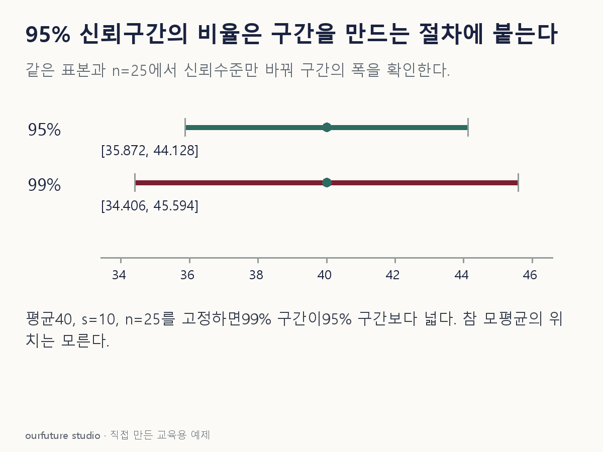

조건을 바꾸며 확인하기
n=25, 자유도 24의 임계값을 미리 계산한 체험이다. 비정규·의존 자료와 베이지안 구간은 지원하지 않는다.
기본 예제와 비교하기
아래 그림과 표는 글의 기본 조건입니다. 입력을 바꾼 결과는 계산 칸에서 확인하세요.

같은 문제를 직접 골라 보기
빈도주의의 유효한 95% 신뢰구간 생성 절차를 같은 조건에서 반복한다고 가정한다.
조건을 더 바꾸면?
예제의 같은 표본에서 신뢰수준만 99%로 올리면 구간은 어떻게 변할까?
변형 풀이 확인
약 [34.406,45.594]로 더 넓어진다.
표준오차 2는 그대로이고 자유도 24의 99% 양측 임계값 약 2.797을 사용한다.
95%는 한 구간의 확률이 아니라 구간 생성 절차의 성질이다.